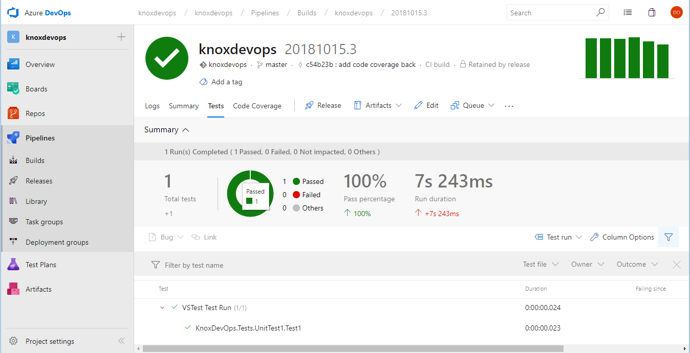
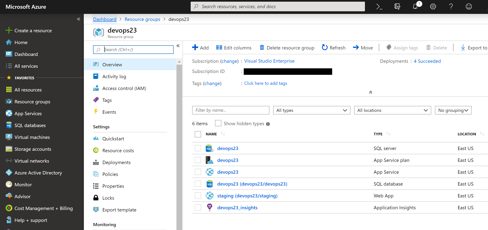
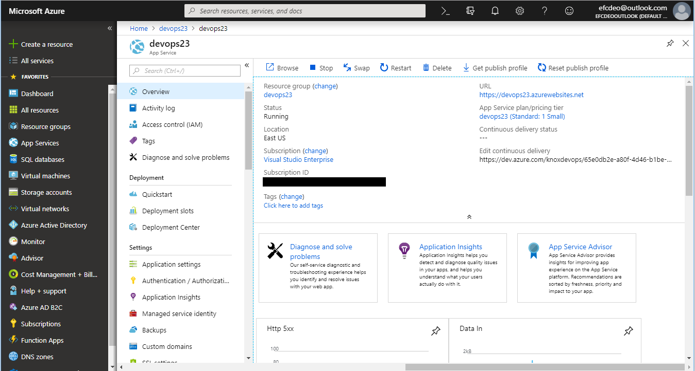
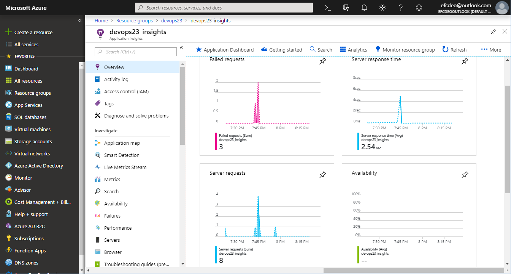

Building
Deploying
Monitoring
Applications
with Azure
https://dev.azure.com/knoxdevops/knoxdevops
Have you ever met someone very confident in their release process?
Someone so confident in their release process they deploy on Fridays?
Have you ever met someone with a manual release process?
This might be their attitude.

To reach sanity:
- Consistent builds
- Consistent deployments
- Monitor applications
Azure DevOps is the starting point.

https://dev.azure.com/knoxdevops/knoxdevops
I can store repos here, or GitHub, or Bitbucket, or wherever.
The language doesn't matter. I also have a PHP example here.
https://dev.azure.com/knoxdevops/php_sample
Consistent builds
Tip 1: Build on code commit!

Consistent builds
Tip 2: Keep your build definition in your repository.

pool:
vmImage: 'Ubuntu 16.04'
variables:
buildConfiguration: 'Release'
steps:
- script: |
dotnet test ./src/KnoxDevOps.Tests/ --configuration $(buildConfiguration) --logger trx --collect "Code coverage"
dotnet test ./src/KnoxDevOps.Tests/ --configuration $(buildConfiguration) /p:CollectCoverage=true /p:CoverletOutputFormat=cobertura /p:CoverletOutput=$(System.DefaultWorkingDirectory)/TestResults/Coverage/
cd ./src/KnoxDevOps.Tests/
dotnet reportgenerator "-reports:$(System.DefaultWorkingDirectory)/TestResults/Coverage/coverage.cobertura.xml" "-targetdir:$(System.DefaultWorkingDirectory)/TestResults/Coverage/Reports" "-reportTypes:htmlInline" "-tag:$(Build.BuildNumber)"
cd ../../
dotnet publish ./src/KnoxDevOps.API/ --configuration $(buildConfiguration) --output $BUILD_ARTIFACTSTAGINGDIRECTORY
- task: PublishTestResults@2
inputs:
testRunner: VSTest
testResultsFiles: '$(System.DefaultWorkingDirectory)/**/*.trx'
- task: PublishCodeCoverageResults@1
inputs:
codeCoverageTool: cobertura
summaryFileLocation: $(System.DefaultWorkingDirectory)/TestResults/Coverage/**/*.xml
reportDirectory: $(System.DefaultWorkingDirectory)/TestResults/Coverage/Reports
- task: PublishBuildArtifacts@1Consistent builds
Consistent builds
Tip 3: Upload test results.
Consistent builds
Tip 4: Upload Code Coverage.
Consistent builds
- Build on code commit!
- Keep your build definition in your repository.
- Upload test results.
- Upload Code Coverage.
Azure DevOps Build Pipelines and your choice of source control.
Consistent deployment
Existing Resources

- App Service Plan - Allocated server resources
- App Service - Azure Web App
- Web App (staging slot) - Deployment slot sharing resources
- Application Insights - Logs, Analytics, Metrics
https://devops23.azurewebsites.net/api/values
Consistent deployments
Tip 1: Only release from one place
Consistent deployments
Tip 2: Define deployment stages
Staging slot
https://devops23-staging.azurewebsites.net/api/values
Consistent deployments
- Only release from one place.
- Define deployment stages.
- Require QA/BA/PM approval.
Azure DevOps Release Pipelines triggered by Azure DevOps Builds.
Monitor applications
Tip 1: Helpdesk tickets don't count as monitoring.
The Failure
(the only piece of code, I swear)
Azure Application Insights
Gathers statistics about the attached applications.
Monitor Applications
Tip 2: Understand the rules you care about.
Monitor Applications
Creating new rule for failed requests.
Monitor Applications
Alert someone when rule activated.
Monitor Applications
Cause failure.
Monitor Applications
Tip 3: Have tier 1 support on-call rotation.

Monitor Applications
- Helpdesk tickets don't count as monitoring.
- Understand the rules you care about.
- Have tier 1 support on-call rotation.
- Pages should be urgent, important, actionable, and real. -Rob Ewaschuk
Azure Application Insights gathering information from Azure Web Apps.
Sanity:
- Consistent builds
- Consistent deployments
- Monitor applications
This is all Azure specific tonight. But the same principles could apply to any DevOps project.
Daniel Oliver
Microsoft MVP
Website: olivercoding.com
Twitter: @a_software_dev
Github: danieloliver
Slides: https://azure-app-talk.olivercoding.com/